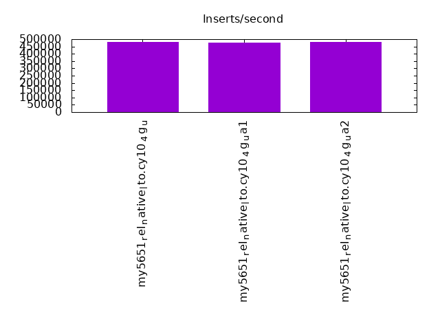
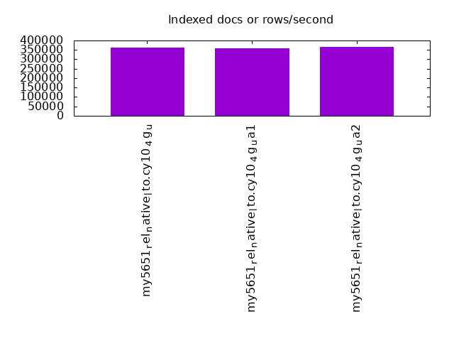
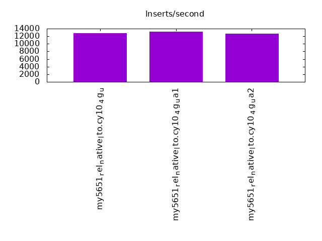
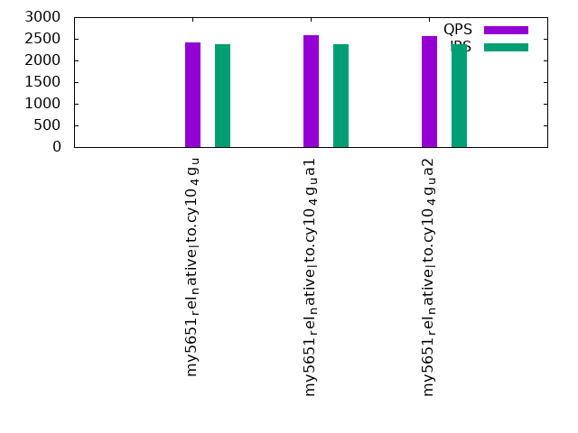
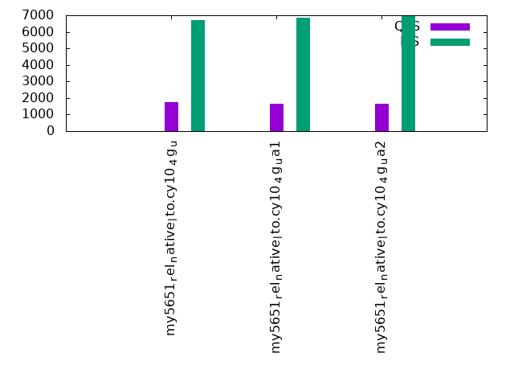
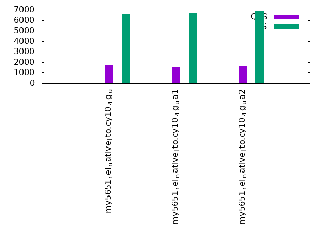

This is a report for the insert benchmark with 480M docs and 24 client(s). It is generated by scripts (bash, awk, sed) and Tufte might not be impressed. An overview of the insert benchmark is here and a short update is here. Below, by DBMS, I mean DBMS+version.config. An example is my8020.c10b40 where my means MySQL, 8020 is version 8.0.20 and c10b40 is the name for the configuration file.
The test server has 80 cores with hyperthreads enabled, 256G RAM and fast storage. The benchmark was run with 24 clients and there were 1 or 3 connections per client (1 for queries or inserts without rate limits, 1+1 for rate limited inserts+deletes). There are 24 tables, with a client per table. It loads 480M rows without secondary indexes, creates secondary indexes, then inserts 120M rows with a delete per insert to avoid growing the table. It then does 3 read+write tests for 3600s each that do queries as fast as possible with 100, 500 and then 1000 inserts/second/client concurrent with the queries and 1000 deletes/second to avoid growing the table. The database is cached by the OS but not by InnoDB.
The tested DBMS are:
The numbers are inserts/s for l.i0 and l.i1, indexed docs (or rows) /s for l.x and queries/s for q*.2. The values are the average rate over the entire test for inserts (IPS) and queries (QPS). The range of values for IPS and QPS is split into 3 parts: bottom 25%, middle 50%, top 25%. Values in the bottom 25% have a red background, values in the top 25% have a green background and values in the middle have no color. A gray background is used for values that can be ignored because the DBMS did not sustain the target insert rate. Red backgrounds are not used when the minimum value is within 80% of the max value.
| dbms | l.i0 | l.x | l.i1 | q100.1 | q500.1 | q1000.1 |
|---|---|---|---|---|---|---|
| my5651_rel_native_lto.cy10_4g_u | 480000 | 361521 | 12820 | 2422 | 1764 | 1704 |
| my5651_rel_native_lto.cy10_4g_ua1 | 476190 | 357217 | 13257 | 2581 | 1642 | 1576 |
| my5651_rel_native_lto.cy10_4g_ua2 | 482897 | 364264 | 12662 | 2553 | 1674 | 1606 |
This table has relative throughput, throughput for the DBMS relative to the DBMS in the first line, using the absolute throughput from the previous table. Values less than 0.95 have a yellow background. Values greater than 1.05 have a blue background.
| dbms | l.i0 | l.x | l.i1 | q100.1 | q500.1 | q1000.1 |
|---|---|---|---|---|---|---|
| my5651_rel_native_lto.cy10_4g_u | 1.00 | 1.00 | 1.00 | 1.00 | 1.00 | 1.00 |
| my5651_rel_native_lto.cy10_4g_ua1 | 0.99 | 0.99 | 1.03 | 1.07 | 0.93 | 0.92 |
| my5651_rel_native_lto.cy10_4g_ua2 | 1.01 | 1.01 | 0.99 | 1.05 | 0.95 | 0.94 |
This lists the average rate of inserts/s for the tests that do inserts concurrent with queries. For such tests the query rate is listed in the table above. The read+write tests are setup so that the insert rate should match the target rate every second. Cells that are not at least 95% of the target have a red background to indicate a failure to satisfy the target.
| dbms | q100.1 | q500.1 | q1000.1 |
|---|---|---|---|
| my5651_rel_native_lto.cy10_4g_u | 2378 | 6716 | 6570 |
| my5651_rel_native_lto.cy10_4g_ua1 | 2377 | 6864 | 6730 |
| my5651_rel_native_lto.cy10_4g_ua2 | 2373 | 6960 | 6895 |
| target | 2400 | 12000 | 24000 |
l.i0: load without secondary indexes. Graphs for performance per 1-second interval are here.
Average throughput:
Insert response time histogram: each cell has the percentage of responses that take <= the time in the header and max is the max response time in seconds. For the max column values in the top 25% of the range have a red background and in the bottom 25% of the range have a green background. The red background is not used when the min value is within 80% of the max value.
| dbms | 256us | 1ms | 4ms | 16ms | 64ms | 256ms | 1s | 4s | 16s | gt | max |
|---|---|---|---|---|---|---|---|---|---|---|---|
| my5651_rel_native_lto.cy10_4g_u | 0.324 | 11.208 | 88.282 | 0.143 | 0.043 | 0.096 | |||||
| my5651_rel_native_lto.cy10_4g_ua1 | 0.322 | 10.643 | 88.839 | 0.153 | 0.043 | 0.103 | |||||
| my5651_rel_native_lto.cy10_4g_ua2 | 0.311 | 11.570 | 87.902 | 0.174 | 0.043 | 0.099 |
Performance metrics for the DBMS listed above. Some are normalized by throughput, others are not. Legend for results is here.
ips qps rps rmbps wps wmbps rpq rkbpq wpi wkbpi csps cpups cspq cpupq dbgb1 dbgb2 rss maxop p50 p99 tag 480000 0 0 0.0 1469.6 119.6 0.000 0.000 0.003 0.255 77260 38.2 0.161 64 31.8 160.3 4.7 0.096 20579 17682 480m.my5651_rel_native_lto.cy10_4g_u 476190 0 0 0.0 1485.2 111.0 0.000 0.000 0.003 0.239 74069 38.3 0.156 64 31.8 160.3 4.7 0.103 20078 17682 480m.my5651_rel_native_lto.cy10_4g_ua1 482897 0 0 0.0 1482.5 121.5 0.000 0.000 0.003 0.258 79319 38.5 0.164 64 31.8 160.3 4.7 0.099 19980 17680 480m.my5651_rel_native_lto.cy10_4g_ua2
l.x: create secondary indexes.
Average throughput:
Performance metrics for the DBMS listed above. Some are normalized by throughput, others are not. Legend for results is here.
ips qps rps rmbps wps wmbps rpq rkbpq wpi wkbpi csps cpups cspq cpupq dbgb1 dbgb2 rss maxop p50 p99 tag 361521 0 0 0.0 16847.9 617.7 0.000 0.000 0.047 1.750 97075 31.0 0.269 69 65.2 193.7 5.3 0.002 NA NA 480m.my5651_rel_native_lto.cy10_4g_u 357217 0 0 0.0 15411.8 573.9 0.000 0.000 0.043 1.645 82249 31.2 0.230 70 65.2 193.7 5.3 0.002 NA NA 480m.my5651_rel_native_lto.cy10_4g_ua1 364264 0 0 0.0 16065.5 591.5 0.000 0.000 0.044 1.663 95590 31.2 0.262 69 65.2 193.7 5.3 0.001 NA NA 480m.my5651_rel_native_lto.cy10_4g_ua2
l.i1: continue load after secondary indexes created. Graphs for performance per 1-second interval are here.
Average throughput:
Insert response time histogram: each cell has the percentage of responses that take <= the time in the header and max is the max response time in seconds. For the max column values in the top 25% of the range have a red background and in the bottom 25% of the range have a green background. The red background is not used when the min value is within 80% of the max value.
| dbms | 256us | 1ms | 4ms | 16ms | 64ms | 256ms | 1s | 4s | 16s | gt | max |
|---|---|---|---|---|---|---|---|---|---|---|---|
| my5651_rel_native_lto.cy10_4g_u | 0.005 | 0.087 | 41.021 | 54.598 | 4.289 | 0.001 | 1.356 | ||||
| my5651_rel_native_lto.cy10_4g_ua1 | 0.002 | 0.123 | 58.712 | 37.124 | 3.539 | 0.500 | 3.304 | ||||
| my5651_rel_native_lto.cy10_4g_ua2 | 0.002 | 0.075 | 42.155 | 52.570 | 5.196 | 0.001 | 1.373 |
Delete response time histogram: each cell has the percentage of responses that take <= the time in the header and max is the max response time in seconds. For the max column values in the top 25% of the range have a red background and in the bottom 25% of the range have a green background. The red background is not used when the min value is within 80% of the max value.
| dbms | 256us | 1ms | 4ms | 16ms | 64ms | 256ms | 1s | 4s | 16s | gt | max |
|---|---|---|---|---|---|---|---|---|---|---|---|
| my5651_rel_native_lto.cy10_4g_u | 0.043 | 0.925 | 43.624 | 52.349 | 3.058 | nonzero | 1.187 | ||||
| my5651_rel_native_lto.cy10_4g_ua1 | 0.043 | 0.873 | 61.464 | 34.471 | 2.720 | 0.430 | 2.998 | ||||
| my5651_rel_native_lto.cy10_4g_ua2 | 0.035 | 0.676 | 45.467 | 50.033 | 3.788 | 0.001 | 1.229 |
Performance metrics for the DBMS listed above. Some are normalized by throughput, others are not. Legend for results is here.
ips qps rps rmbps wps wmbps rpq rkbpq wpi wkbpi csps cpups cspq cpupq dbgb1 dbgb2 rss maxop p50 p99 tag 12820 0 268 1.2 38001.4 725.6 0.021 0.100 2.964 57.957 489769 47.4 38.202 2958 116.7 254.1 5.3 1.356 549 150 480m.my5651_rel_native_lto.cy10_4g_u 13257 0 171 1.0 38397.3 774.5 0.013 0.078 2.896 59.824 435573 44.0 32.857 2655 117.1 255.1 5.3 3.304 550 0 480m.my5651_rel_native_lto.cy10_4g_ua1 12662 0 222 1.3 38587.8 797.8 0.018 0.108 3.047 64.518 463079 45.6 36.572 2881 116.7 254.3 5.3 1.373 549 150 480m.my5651_rel_native_lto.cy10_4g_ua2
q100.1: range queries with 100 insert/s per client. Graphs for performance per 1-second interval are here.
Average throughput:
Query response time histogram: each cell has the percentage of responses that take <= the time in the header and max is the max response time in seconds. For max values in the top 25% of the range have a red background and in the bottom 25% of the range have a green background. The red background is not used when the min value is within 80% of the max value.
| dbms | 256us | 1ms | 4ms | 16ms | 64ms | 256ms | 1s | 4s | 16s | gt | max |
|---|---|---|---|---|---|---|---|---|---|---|---|
| my5651_rel_native_lto.cy10_4g_u | 1.888 | 9.412 | 23.727 | 45.087 | 19.626 | 0.261 | nonzero | 0.358 | |||
| my5651_rel_native_lto.cy10_4g_ua1 | 2.193 | 9.648 | 24.905 | 45.491 | 17.536 | 0.226 | 0.001 | 0.980 | |||
| my5651_rel_native_lto.cy10_4g_ua2 | 2.151 | 8.982 | 24.888 | 46.046 | 17.714 | 0.218 | nonzero | 0.601 |
Insert response time histogram: each cell has the percentage of responses that take <= the time in the header and max is the max response time in seconds. For max values in the top 25% of the range have a red background and in the bottom 25% of the range have a green background. The red background is not used when the min value is within 80% of the max value.
| dbms | 256us | 1ms | 4ms | 16ms | 64ms | 256ms | 1s | 4s | 16s | gt | max |
|---|---|---|---|---|---|---|---|---|---|---|---|
| my5651_rel_native_lto.cy10_4g_u | 0.004 | 0.762 | 4.013 | 47.523 | 47.698 | 0.887 | |||||
| my5651_rel_native_lto.cy10_4g_ua1 | 0.034 | 2.784 | 11.507 | 54.717 | 30.953 | 0.006 | 1.598 | ||||
| my5651_rel_native_lto.cy10_4g_ua2 | 0.017 | 2.462 | 9.777 | 54.287 | 33.457 | 0.001 | 1.039 |
Delete response time histogram: each cell has the percentage of responses that take <= the time in the header and max is the max response time in seconds. For max values in the top 25% of the range have a red background and in the bottom 25% of the range have a green background. The red background is not used when the min value is within 80% of the max value.
| dbms | 256us | 1ms | 4ms | 16ms | 64ms | 256ms | 1s | 4s | 16s | gt | max |
|---|---|---|---|---|---|---|---|---|---|---|---|
| my5651_rel_native_lto.cy10_4g_u | 0.010 | 0.808 | 4.051 | 48.238 | 46.892 | 0.782 | |||||
| my5651_rel_native_lto.cy10_4g_ua1 | 0.049 | 2.902 | 11.589 | 55.209 | 30.249 | 0.002 | 1.144 | ||||
| my5651_rel_native_lto.cy10_4g_ua2 | 0.024 | 2.554 | 9.870 | 54.694 | 32.858 | 0.740 |
Performance metrics for the DBMS listed above. Some are normalized by throughput, others are not. Legend for results is here.
ips qps rps rmbps wps wmbps rpq rkbpq wpi wkbpi csps cpups cspq cpupq dbgb1 dbgb2 rss maxop p50 p99 tag 2378 2422 267 4.2 11823.2 275.9 0.110 1.760 4.972 118.820 215899 37.8 89.145 12486 117.0 254.8 5.3 0.358 96 80 480m.my5651_rel_native_lto.cy10_4g_u 2377 2581 237 3.4 15885.4 307.8 0.092 1.346 6.684 132.609 244251 36.8 94.638 11407 117.4 255.7 5.3 0.980 112 80 480m.my5651_rel_native_lto.cy10_4g_ua1 2373 2553 205 3.4 16024.4 326.2 0.080 1.360 6.753 140.757 248612 37.1 97.392 11627 117.0 254.9 5.3 0.601 112 64 480m.my5651_rel_native_lto.cy10_4g_ua2
q500.1: range queries with 500 insert/s per client. Graphs for performance per 1-second interval are here.
Average throughput:
Query response time histogram: each cell has the percentage of responses that take <= the time in the header and max is the max response time in seconds. For max values in the top 25% of the range have a red background and in the bottom 25% of the range have a green background. The red background is not used when the min value is within 80% of the max value.
| dbms | 256us | 1ms | 4ms | 16ms | 64ms | 256ms | 1s | 4s | 16s | gt | max |
|---|---|---|---|---|---|---|---|---|---|---|---|
| my5651_rel_native_lto.cy10_4g_u | 1.207 | 6.587 | 16.890 | 44.672 | 29.642 | 1.001 | 0.001 | 0.617 | |||
| my5651_rel_native_lto.cy10_4g_ua1 | 1.145 | 6.407 | 15.991 | 43.578 | 31.346 | 1.515 | 0.017 | nonzero | 1.774 | ||
| my5651_rel_native_lto.cy10_4g_ua2 | 1.191 | 6.141 | 16.480 | 44.195 | 30.500 | 1.485 | 0.009 | nonzero | 1.315 |
Insert response time histogram: each cell has the percentage of responses that take <= the time in the header and max is the max response time in seconds. For max values in the top 25% of the range have a red background and in the bottom 25% of the range have a green background. The red background is not used when the min value is within 80% of the max value.
| dbms | 256us | 1ms | 4ms | 16ms | 64ms | 256ms | 1s | 4s | 16s | gt | max |
|---|---|---|---|---|---|---|---|---|---|---|---|
| my5651_rel_native_lto.cy10_4g_u | 0.006 | 0.088 | 4.141 | 85.950 | 9.815 | 0.842 | |||||
| my5651_rel_native_lto.cy10_4g_ua1 | 0.005 | 0.079 | 3.051 | 86.051 | 10.792 | 0.023 | 2.623 | ||||
| my5651_rel_native_lto.cy10_4g_ua2 | 0.009 | 0.102 | 3.703 | 86.308 | 9.872 | 0.005 | 1.741 |
Delete response time histogram: each cell has the percentage of responses that take <= the time in the header and max is the max response time in seconds. For max values in the top 25% of the range have a red background and in the bottom 25% of the range have a green background. The red background is not used when the min value is within 80% of the max value.
| dbms | 256us | 1ms | 4ms | 16ms | 64ms | 256ms | 1s | 4s | 16s | gt | max |
|---|---|---|---|---|---|---|---|---|---|---|---|
| my5651_rel_native_lto.cy10_4g_u | 0.011 | 0.087 | 4.251 | 86.361 | 9.290 | nonzero | 1.585 | ||||
| my5651_rel_native_lto.cy10_4g_ua1 | 0.007 | 0.079 | 3.202 | 86.507 | 10.193 | 0.012 | 2.145 | ||||
| my5651_rel_native_lto.cy10_4g_ua2 | 0.011 | 0.102 | 3.855 | 86.749 | 9.279 | 0.004 | 1.809 |
Performance metrics for the DBMS listed above. Some are normalized by throughput, others are not. Legend for results is here.
ips qps rps rmbps wps wmbps rpq rkbpq wpi wkbpi csps cpups cspq cpupq dbgb1 dbgb2 rss maxop p50 p99 tag 6716 1764 99 1.9 27162.4 471.8 0.056 1.120 4.044 71.927 491290 58.2 278.478 26392 119.4 259.8 5.3 0.617 80 48 480m.my5651_rel_native_lto.cy10_4g_u 6864 1642 233 2.8 26166.4 460.8 0.142 1.740 3.812 68.743 474027 58.1 288.601 28298 119.7 260.7 5.4 1.774 64 32 480m.my5651_rel_native_lto.cy10_4g_ua1 6960 1674 301 3.3 27133.0 478.8 0.180 2.008 3.899 70.444 498639 58.3 297.802 27855 119.4 259.9 5.3 1.315 64 48 480m.my5651_rel_native_lto.cy10_4g_ua2
q1000.1: range queries with 1000 insert/s per client. Graphs for performance per 1-second interval are here.
Average throughput:
Query response time histogram: each cell has the percentage of responses that take <= the time in the header and max is the max response time in seconds. For max values in the top 25% of the range have a red background and in the bottom 25% of the range have a green background. The red background is not used when the min value is within 80% of the max value.
| dbms | 256us | 1ms | 4ms | 16ms | 64ms | 256ms | 1s | 4s | 16s | gt | max |
|---|---|---|---|---|---|---|---|---|---|---|---|
| my5651_rel_native_lto.cy10_4g_u | 1.175 | 6.496 | 16.684 | 43.818 | 30.534 | 1.292 | 0.001 | 0.602 | |||
| my5651_rel_native_lto.cy10_4g_ua1 | 1.086 | 6.347 | 15.699 | 42.591 | 32.391 | 1.867 | 0.018 | nonzero | 1.766 | ||
| my5651_rel_native_lto.cy10_4g_ua2 | 1.099 | 6.070 | 16.071 | 43.231 | 31.725 | 1.795 | 0.009 | 0.879 |
Insert response time histogram: each cell has the percentage of responses that take <= the time in the header and max is the max response time in seconds. For max values in the top 25% of the range have a red background and in the bottom 25% of the range have a green background. The red background is not used when the min value is within 80% of the max value.
| dbms | 256us | 1ms | 4ms | 16ms | 64ms | 256ms | 1s | 4s | 16s | gt | max |
|---|---|---|---|---|---|---|---|---|---|---|---|
| my5651_rel_native_lto.cy10_4g_u | 0.003 | 0.040 | 4.232 | 83.873 | 11.852 | nonzero | 1.143 | ||||
| my5651_rel_native_lto.cy10_4g_ua1 | 0.003 | 0.025 | 3.052 | 84.572 | 12.333 | 0.016 | 2.044 | ||||
| my5651_rel_native_lto.cy10_4g_ua2 | 0.001 | 0.032 | 3.827 | 85.560 | 10.578 | 0.001 | 1.962 |
Delete response time histogram: each cell has the percentage of responses that take <= the time in the header and max is the max response time in seconds. For max values in the top 25% of the range have a red background and in the bottom 25% of the range have a green background. The red background is not used when the min value is within 80% of the max value.
| dbms | 256us | 1ms | 4ms | 16ms | 64ms | 256ms | 1s | 4s | 16s | gt | max |
|---|---|---|---|---|---|---|---|---|---|---|---|
| my5651_rel_native_lto.cy10_4g_u | 0.006 | 0.039 | 4.296 | 84.328 | 11.331 | nonzero | 1.003 | ||||
| my5651_rel_native_lto.cy10_4g_ua1 | 0.005 | 0.023 | 3.167 | 85.101 | 11.694 | 0.009 | 1.924 | ||||
| my5651_rel_native_lto.cy10_4g_ua2 | 0.001 | 0.034 | 3.954 | 85.993 | 10.018 | 0.001 | 1.962 |
Performance metrics for the DBMS listed above. Some are normalized by throughput, others are not. Legend for results is here.
ips qps rps rmbps wps wmbps rpq rkbpq wpi wkbpi csps cpups cspq cpupq dbgb1 dbgb2 rss maxop p50 p99 tag 6570 1704 179 0.8 26812.0 462.5 0.105 0.458 4.081 72.094 490225 58.4 287.674 27416 124.1 269.8 5.3 0.602 64 48 480m.my5651_rel_native_lto.cy10_4g_u 6730 1576 174 1.1 25935.7 454.9 0.111 0.685 3.854 69.219 477040 58.2 302.690 29543 124.5 270.7 5.4 1.766 64 32 480m.my5651_rel_native_lto.cy10_4g_ua1 6895 1606 154 0.8 26893.8 472.8 0.096 0.541 3.900 70.210 503495 58.7 313.411 29231 124.2 269.9 5.3 0.879 64 48 480m.my5651_rel_native_lto.cy10_4g_ua2
l.i0: load without secondary indexes
Performance metrics for all DBMS, not just the ones listed above. Some are normalized by throughput, others are not. Legend for results is here.
ips qps rps rmbps wps wmbps rpq rkbpq wpi wkbpi csps cpups cspq cpupq dbgb1 dbgb2 rss maxop p50 p99 tag 480000 0 0 0.0 1469.6 119.6 0.000 0.000 0.003 0.255 77260 38.2 0.161 64 31.8 160.3 4.7 0.096 20579 17682 480m.my5651_rel_native_lto.cy10_4g_u 476190 0 0 0.0 1485.2 111.0 0.000 0.000 0.003 0.239 74069 38.3 0.156 64 31.8 160.3 4.7 0.103 20078 17682 480m.my5651_rel_native_lto.cy10_4g_ua1 482897 0 0 0.0 1482.5 121.5 0.000 0.000 0.003 0.258 79319 38.5 0.164 64 31.8 160.3 4.7 0.099 19980 17680 480m.my5651_rel_native_lto.cy10_4g_ua2
l.x: create secondary indexes
Performance metrics for all DBMS, not just the ones listed above. Some are normalized by throughput, others are not. Legend for results is here.
ips qps rps rmbps wps wmbps rpq rkbpq wpi wkbpi csps cpups cspq cpupq dbgb1 dbgb2 rss maxop p50 p99 tag 361521 0 0 0.0 16847.9 617.7 0.000 0.000 0.047 1.750 97075 31.0 0.269 69 65.2 193.7 5.3 0.002 NA NA 480m.my5651_rel_native_lto.cy10_4g_u 357217 0 0 0.0 15411.8 573.9 0.000 0.000 0.043 1.645 82249 31.2 0.230 70 65.2 193.7 5.3 0.002 NA NA 480m.my5651_rel_native_lto.cy10_4g_ua1 364264 0 0 0.0 16065.5 591.5 0.000 0.000 0.044 1.663 95590 31.2 0.262 69 65.2 193.7 5.3 0.001 NA NA 480m.my5651_rel_native_lto.cy10_4g_ua2
l.i1: continue load after secondary indexes created
Performance metrics for all DBMS, not just the ones listed above. Some are normalized by throughput, others are not. Legend for results is here.
ips qps rps rmbps wps wmbps rpq rkbpq wpi wkbpi csps cpups cspq cpupq dbgb1 dbgb2 rss maxop p50 p99 tag 12820 0 268 1.2 38001.4 725.6 0.021 0.100 2.964 57.957 489769 47.4 38.202 2958 116.7 254.1 5.3 1.356 549 150 480m.my5651_rel_native_lto.cy10_4g_u 13257 0 171 1.0 38397.3 774.5 0.013 0.078 2.896 59.824 435573 44.0 32.857 2655 117.1 255.1 5.3 3.304 550 0 480m.my5651_rel_native_lto.cy10_4g_ua1 12662 0 222 1.3 38587.8 797.8 0.018 0.108 3.047 64.518 463079 45.6 36.572 2881 116.7 254.3 5.3 1.373 549 150 480m.my5651_rel_native_lto.cy10_4g_ua2
q100.1: range queries with 100 insert/s per client
Performance metrics for all DBMS, not just the ones listed above. Some are normalized by throughput, others are not. Legend for results is here.
ips qps rps rmbps wps wmbps rpq rkbpq wpi wkbpi csps cpups cspq cpupq dbgb1 dbgb2 rss maxop p50 p99 tag 2378 2422 267 4.2 11823.2 275.9 0.110 1.760 4.972 118.820 215899 37.8 89.145 12486 117.0 254.8 5.3 0.358 96 80 480m.my5651_rel_native_lto.cy10_4g_u 2377 2581 237 3.4 15885.4 307.8 0.092 1.346 6.684 132.609 244251 36.8 94.638 11407 117.4 255.7 5.3 0.980 112 80 480m.my5651_rel_native_lto.cy10_4g_ua1 2373 2553 205 3.4 16024.4 326.2 0.080 1.360 6.753 140.757 248612 37.1 97.392 11627 117.0 254.9 5.3 0.601 112 64 480m.my5651_rel_native_lto.cy10_4g_ua2
q500.1: range queries with 500 insert/s per client
Performance metrics for all DBMS, not just the ones listed above. Some are normalized by throughput, others are not. Legend for results is here.
ips qps rps rmbps wps wmbps rpq rkbpq wpi wkbpi csps cpups cspq cpupq dbgb1 dbgb2 rss maxop p50 p99 tag 6716 1764 99 1.9 27162.4 471.8 0.056 1.120 4.044 71.927 491290 58.2 278.478 26392 119.4 259.8 5.3 0.617 80 48 480m.my5651_rel_native_lto.cy10_4g_u 6864 1642 233 2.8 26166.4 460.8 0.142 1.740 3.812 68.743 474027 58.1 288.601 28298 119.7 260.7 5.4 1.774 64 32 480m.my5651_rel_native_lto.cy10_4g_ua1 6960 1674 301 3.3 27133.0 478.8 0.180 2.008 3.899 70.444 498639 58.3 297.802 27855 119.4 259.9 5.3 1.315 64 48 480m.my5651_rel_native_lto.cy10_4g_ua2
q1000.1: range queries with 1000 insert/s per client
Performance metrics for all DBMS, not just the ones listed above. Some are normalized by throughput, others are not. Legend for results is here.
ips qps rps rmbps wps wmbps rpq rkbpq wpi wkbpi csps cpups cspq cpupq dbgb1 dbgb2 rss maxop p50 p99 tag 6570 1704 179 0.8 26812.0 462.5 0.105 0.458 4.081 72.094 490225 58.4 287.674 27416 124.1 269.8 5.3 0.602 64 48 480m.my5651_rel_native_lto.cy10_4g_u 6730 1576 174 1.1 25935.7 454.9 0.111 0.685 3.854 69.219 477040 58.2 302.690 29543 124.5 270.7 5.4 1.766 64 32 480m.my5651_rel_native_lto.cy10_4g_ua1 6895 1606 154 0.8 26893.8 472.8 0.096 0.541 3.900 70.210 503495 58.7 313.411 29231 124.2 269.9 5.3 0.879 64 48 480m.my5651_rel_native_lto.cy10_4g_ua2
Insert response time histogram
256us 1ms 4ms 16ms 64ms 256ms 1s 4s 16s gt max tag 0.000 0.324 11.208 88.282 0.143 0.043 0.000 0.000 0.000 0.000 0.096 my5651_rel_native_lto.cy10_4g_u 0.000 0.322 10.643 88.839 0.153 0.043 0.000 0.000 0.000 0.000 0.103 my5651_rel_native_lto.cy10_4g_ua1 0.000 0.311 11.570 87.902 0.174 0.043 0.000 0.000 0.000 0.000 0.099 my5651_rel_native_lto.cy10_4g_ua2
TODO - determine whether there is data for create index response time
Insert response time histogram
256us 1ms 4ms 16ms 64ms 256ms 1s 4s 16s gt max tag 0.000 0.000 0.005 0.087 41.021 54.598 4.289 0.001 0.000 0.000 1.356 my5651_rel_native_lto.cy10_4g_u 0.000 0.000 0.002 0.123 58.712 37.124 3.539 0.500 0.000 0.000 3.304 my5651_rel_native_lto.cy10_4g_ua1 0.000 0.000 0.002 0.075 42.155 52.570 5.196 0.001 0.000 0.000 1.373 my5651_rel_native_lto.cy10_4g_ua2
Delete response time histogram
256us 1ms 4ms 16ms 64ms 256ms 1s 4s 16s gt max tag 0.000 0.000 0.043 0.925 43.624 52.349 3.058 nonzero 0.000 0.000 1.187 my5651_rel_native_lto.cy10_4g_u 0.000 0.000 0.043 0.873 61.464 34.471 2.720 0.430 0.000 0.000 2.998 my5651_rel_native_lto.cy10_4g_ua1 0.000 0.000 0.035 0.676 45.467 50.033 3.788 0.001 0.000 0.000 1.229 my5651_rel_native_lto.cy10_4g_ua2
Query response time histogram
256us 1ms 4ms 16ms 64ms 256ms 1s 4s 16s gt max tag 1.888 9.412 23.727 45.087 19.626 0.261 nonzero 0.000 0.000 0.000 0.358 my5651_rel_native_lto.cy10_4g_u 2.193 9.648 24.905 45.491 17.536 0.226 0.001 0.000 0.000 0.000 0.980 my5651_rel_native_lto.cy10_4g_ua1 2.151 8.982 24.888 46.046 17.714 0.218 nonzero 0.000 0.000 0.000 0.601 my5651_rel_native_lto.cy10_4g_ua2
Insert response time histogram
256us 1ms 4ms 16ms 64ms 256ms 1s 4s 16s gt max tag 0.000 0.000 0.004 0.762 4.013 47.523 47.698 0.000 0.000 0.000 0.887 my5651_rel_native_lto.cy10_4g_u 0.000 0.000 0.034 2.784 11.507 54.717 30.953 0.006 0.000 0.000 1.598 my5651_rel_native_lto.cy10_4g_ua1 0.000 0.000 0.017 2.462 9.777 54.287 33.457 0.001 0.000 0.000 1.039 my5651_rel_native_lto.cy10_4g_ua2
Delete response time histogram
256us 1ms 4ms 16ms 64ms 256ms 1s 4s 16s gt max tag 0.000 0.000 0.010 0.808 4.051 48.238 46.892 0.000 0.000 0.000 0.782 my5651_rel_native_lto.cy10_4g_u 0.000 0.000 0.049 2.902 11.589 55.209 30.249 0.002 0.000 0.000 1.144 my5651_rel_native_lto.cy10_4g_ua1 0.000 0.000 0.024 2.554 9.870 54.694 32.858 0.000 0.000 0.000 0.740 my5651_rel_native_lto.cy10_4g_ua2
Query response time histogram
256us 1ms 4ms 16ms 64ms 256ms 1s 4s 16s gt max tag 1.207 6.587 16.890 44.672 29.642 1.001 0.001 0.000 0.000 0.000 0.617 my5651_rel_native_lto.cy10_4g_u 1.145 6.407 15.991 43.578 31.346 1.515 0.017 nonzero 0.000 0.000 1.774 my5651_rel_native_lto.cy10_4g_ua1 1.191 6.141 16.480 44.195 30.500 1.485 0.009 nonzero 0.000 0.000 1.315 my5651_rel_native_lto.cy10_4g_ua2
Insert response time histogram
256us 1ms 4ms 16ms 64ms 256ms 1s 4s 16s gt max tag 0.000 0.000 0.006 0.088 4.141 85.950 9.815 0.000 0.000 0.000 0.842 my5651_rel_native_lto.cy10_4g_u 0.000 0.000 0.005 0.079 3.051 86.051 10.792 0.023 0.000 0.000 2.623 my5651_rel_native_lto.cy10_4g_ua1 0.000 0.000 0.009 0.102 3.703 86.308 9.872 0.005 0.000 0.000 1.741 my5651_rel_native_lto.cy10_4g_ua2
Delete response time histogram
256us 1ms 4ms 16ms 64ms 256ms 1s 4s 16s gt max tag 0.000 0.000 0.011 0.087 4.251 86.361 9.290 nonzero 0.000 0.000 1.585 my5651_rel_native_lto.cy10_4g_u 0.000 0.000 0.007 0.079 3.202 86.507 10.193 0.012 0.000 0.000 2.145 my5651_rel_native_lto.cy10_4g_ua1 0.000 0.000 0.011 0.102 3.855 86.749 9.279 0.004 0.000 0.000 1.809 my5651_rel_native_lto.cy10_4g_ua2
Query response time histogram
256us 1ms 4ms 16ms 64ms 256ms 1s 4s 16s gt max tag 1.175 6.496 16.684 43.818 30.534 1.292 0.001 0.000 0.000 0.000 0.602 my5651_rel_native_lto.cy10_4g_u 1.086 6.347 15.699 42.591 32.391 1.867 0.018 nonzero 0.000 0.000 1.766 my5651_rel_native_lto.cy10_4g_ua1 1.099 6.070 16.071 43.231 31.725 1.795 0.009 0.000 0.000 0.000 0.879 my5651_rel_native_lto.cy10_4g_ua2
Insert response time histogram
256us 1ms 4ms 16ms 64ms 256ms 1s 4s 16s gt max tag 0.000 0.000 0.003 0.040 4.232 83.873 11.852 nonzero 0.000 0.000 1.143 my5651_rel_native_lto.cy10_4g_u 0.000 0.000 0.003 0.025 3.052 84.572 12.333 0.016 0.000 0.000 2.044 my5651_rel_native_lto.cy10_4g_ua1 0.000 0.000 0.001 0.032 3.827 85.560 10.578 0.001 0.000 0.000 1.962 my5651_rel_native_lto.cy10_4g_ua2
Delete response time histogram
256us 1ms 4ms 16ms 64ms 256ms 1s 4s 16s gt max tag 0.000 0.000 0.006 0.039 4.296 84.328 11.331 nonzero 0.000 0.000 1.003 my5651_rel_native_lto.cy10_4g_u 0.000 0.000 0.005 0.023 3.167 85.101 11.694 0.009 0.000 0.000 1.924 my5651_rel_native_lto.cy10_4g_ua1 0.000 0.000 0.001 0.034 3.954 85.993 10.018 0.001 0.000 0.000 1.962 my5651_rel_native_lto.cy10_4g_ua2